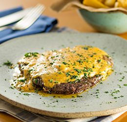
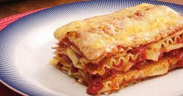

Top receitas 2023

Bife com manteiga
Ingredientes
- 4 colheres (sopa) de manteiga sem sal, derretida
- 1 sachê de tempero sazon
- 2 pitadas de sal
- 400 g de alcatra em bifes
Modo de Preparo
- 1. Em uma tigela pequena, coloque a manteiga, o Tempero SAZÓN® e o sal, e misture bem.
- 2. Espalhe metade dessa manteiga temperada por todos os lados dos bifes.
- 3. Leve uma frigideira grande ao fogo alto, junte os bifes, aos poucos, e frite por 3 minutos de cada lado. Desligue o fogo, adicione o restante da manteiga temperada e sirva em seguida.

Lasanha de presunto e queijo
Ingredientes
- 1 pacote de massa fresca para lasanha 400 g (dispensa cozimento)
- 300 g de mussarela em tirinhas
- 300 g de presunto em tirinhas
- Queijo parmesão ralado a gosto para polvilhar
- 1 pacote de molho de tomate
Modo de Preparo
- 1. Para o molho, coloque em uma panela o azeite e o alho picado, deixe dourar. Junte o tomate pelado picado, a água e tempere com sal. Deixe ferver por 10 minutos em fogo baixo..
- 2. Em um refratário (20 cm x 30 cm), coloque uma porção de molho ainda quente; cubra com uma camada de massa, espalhe mais molho, fatias de presunto e queijo muçarela. Repita as camadas até a borda do refratário.
- 3. Finalize com o queijo parmesão ralado e polvilhe orégano. Cubra com papel alumínio. Leve ao forno preaquecido por cerca de 10 minutos a 200ºC.

Ingredientes
- 1 ovo
- 2 colheres (sopa) de tapioca
- 1 colher (sopa) requeijão light
- 1 pitada de sal
Modo de Preparo
- 1. Coloque todos os ingredientes em um prato e misture-os até que fiquem homogêneos.
- 2. Depois, aqueça um pouquinho uma frigideira sem óleo, sem azeite e sem manteiga, somente a frigideira e logo após coloque a massa.
- 3. Espere um tempo até que ela fique um pouco douradinha embaixo, se preferir virar a crepioca, vire-a com a ajuda de uma colher ou garfo.
- 4. Ou coloque uma tampa que cubra toda a frigideira e espere ela cozinhar até o ponto do seu gosto, mais queimadinho ou mais branquinho.